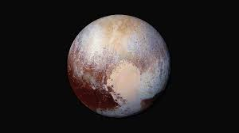

Components of the Solar System
The Sun

Center of the Solar System: A massive, glowing ball of hot gases primarily
composed of hydrogen and helium. It provides the gravitational pull that
keeps the solar system together and is the main source of energy.
The Planets
The Inner Planets (The Terrestrial Planets)

-
Mercury: The smallest and closest to the Sun, with a very thin
atmosphere.
-
Venus: Similar in size to Earth but with a thick, toxic atmosphere and
extreme surface heat.
-
Earth: The only planet known to support life, with water and a
breathable atmosphere.
-
Mars: Known as the Red Planet, with a thin atmosphere and signs of
ancient water flows.
The Outer Planets (Gas Giants and Ice Giants)


-
Jupiter: The largest planet, known for its Great Red Spot and many
moons.
- Saturn: Famous for its stunning ring system and numerous moons.
- Uranus: An ice giant with a tilted rotation axis and faint rings.
-
Neptune: An ice giant known for its intense blue color and strong winds.
Dwarf Planets


- Pluto: The most famous, located in the Kuiper Belt.
-
Eris, Haumea, and Makemake: Other recognized dwarf planets in the solar
system.
Moons


Most planets have natural satellites or moons. Notable examples include
Earth's Moon, Jupiter's Ganymede (the largest moon), and Saturn's Titan
(which has a thick atmosphere).
Small Bodies

-
Asteroids: Rocky objects primarily found in the asteroid belt between
Mars and Jupiter.
-
Comets: Icy bodies that develop glowing comas and tails when they
approach the Sun.
-
Meteoroids: Small rocky or metallic bodies that can become meteors
(shooting stars) when they enter Earth’s atmosphere.
Kuiper Belt and Oort Cloud


-
Kuiper Belt: A region beyond Neptune filled with small icy bodies,
including dwarf planets like Pluto.
-
Oort Cloud: A distant, spherical shell of icy objects surrounding the
solar system, believed to be the source of long-period comets.